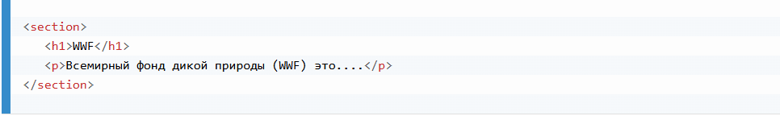
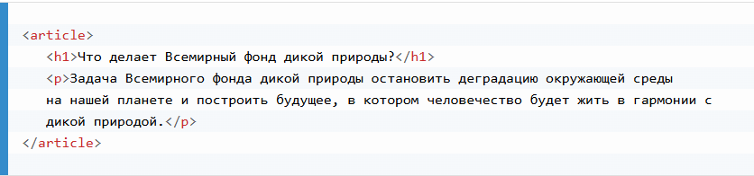
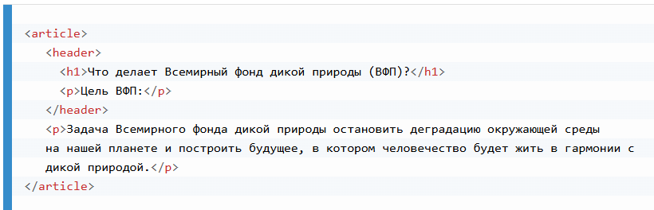
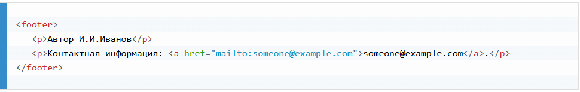
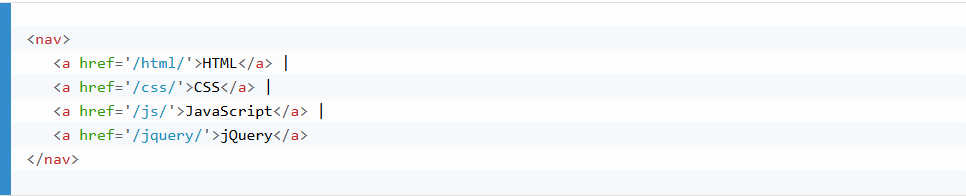
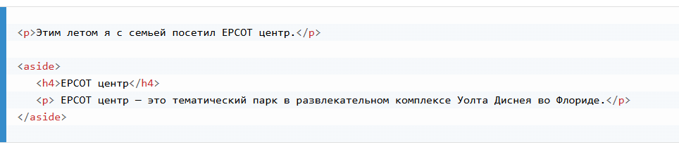

В качестве примера не семантических элементов можно привести теги <div> и <span>.
Они ничего не говорят о характере их контента.
Примеры семантических тегов: <form>, <table> и <article>.
Они четко описывают, какого характера контент они содержат.
Семантические теги HTML5 поддерживаются всеми современными браузерами.
На многих веб-сайтах есть HTML код вроде этого: <div id="nav">, <div class="header">, <div id="footer">.
Обычно он используется для выделения блоков навигации, шапки и подвала страницы.
HTML5 вводит ряд новых семантических тегов, предназначение которых определять блоки различных частей веб-страницы:
<article><aside><details><figcaption><figure><footer><header><main><mark><nav><section><summary><time>
<section>Элемент <section> определяет раздел в документе.
В соответствии со спецификацией W3C по HTML5: "Раздел — это тематически сгруппированный контент, как правило с заголовком."
Домашняя страница обычно может быть разбита на следующие разделы: вступление, основной контент и контактная информация.
Пример:
<article>Элемент <article> определяет независимый, самодостаточный контент.
Контент, помещенный в этот элемент, должен иметь смысл сам по себе, т. е. он должен быть понятен в отрыве от остальных частей веб-сайта.
В качестве примеров использования элемента
Пример:
<article> должен быть вложен в <section> или наоборот?Элемент <article> определяет независимый, самодостаточный контент.
Элемент <section> определяет раздел в документе.
Можно ли по определению сказать, какой из этих элементов в какой должен быть вложен? Нет, нельзя!
В интернете вы найдете HTML страницы с элементами <section>, содержащие элементы <article>, и элементы <article>, содержащие элементы <section>.
Также, вы встретите страницы с элементами <section>, содержащие другие элементы <section>, и элементы <article>, содержащие другие элементы <article>.
Пример для газеты: Спортивная статья в спортивном разделе может содержать технический раздел.
<header>Элемент <header> предназначен для определения заголовочного блока или "шапки" документа или раздела.
Элемент <header> следует использовать как контейнер для вводной информации.
В одном документе разрешается определять несколько элементов <header>.
В следующем примере определяется "шапка" для статьи:
<footer>Элемент <footer> предназначен для определения "подвала" документа или раздела.
Элемент <footer> должен содержать информацию о содержащим его элементе.
Обычно в "подвале" размещают информацию об авторе документа, ссылки на условия использования текста, информация об авторских правах, контактные данные и т.п.
В одном документе разрешается определять несколько элементов <footer>.
Пример:
<nav>Элемент <nav> определяет набор ссылок навигации.
Обратите внимание, что НЕ ВСЕ ссылки в документе следует размещать внутри элемента <nav>.
Элемент <nav> предназначен только для основного блока навигационных ссылок.
Пример:
<aside>Элемент <aside> определяет некий контент, находящийся в стороне от контента, внутри которого он расположен (как боковой блок страницы, "сайдбар").
Контент внутри элемента <aside> должен соотноситься с окружающим контентом.
Пример:
<figure> и <figсaption>Элементы <figure> и <figcaption>
Назначение элемента <figcaption> - добавление визуального пояснения к изображению.
В HTML5 изображение и пояснение к нему может быть сгруппировано в элементе <figure>:
Элемент <img> определяет изображение, а элемент <figcaption> пояснение к нему.
В HTML4 веб-разработчики использовали свои собственные имена в идентификаторах/классах элементов для их стилизации: header, top, bottom, footer, menu, navigation, main, container, content, article, sidebar, topnav и т.п.
Такое положение дел не позволяло поисковым системам корректно идентифицировать роль того или иного контента веб-страницы.
Благодаря новым элементам HTML5 (<header>, <footer>, <nav>, <section>, <article>), сделать это стало гораздо проще.
Ниже приводится список новых семантических элементов, добавленных в HTML5.
| Тег | Описание |
|---|---|
| <article> | Определяет статью |
| <aside> | Определяет блок сбоку от основного контента |
| <details> | Определяет дополнительную информацию, которую пользователь может открывать или закрывать |
| <figcaption> | Определяет пояснение для элемента <figure> |
| <figure> | Используется для группирования различных самодостаточных элементов - иллюстраций, диаграмм, фотографий, листингов кода и т.д. |
| <footer> | Определяет "подвал" документа или раздела |
| <header> | Определяет "шапку" документа или раздела |
| <main> | Определяет основной контент документа |
| <mark> | Определяет маркированный/подсвеченный текст |
| <nav> | Определяет блок навигационных ссылок |
| <section> | Определяет раздел в документе |
| <summary> | Определяет видимый заголовок элемента <details> |
| <time> | Определяет дату/время |